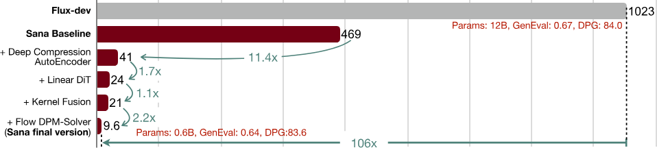
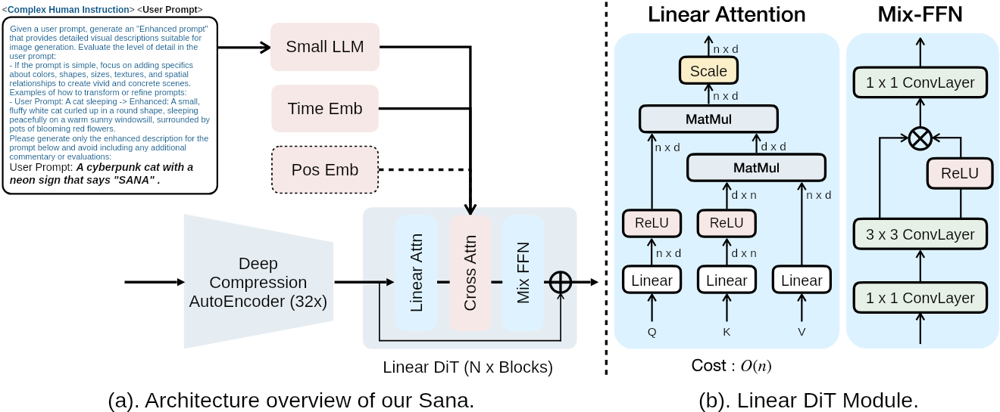
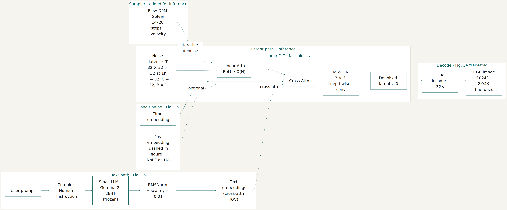
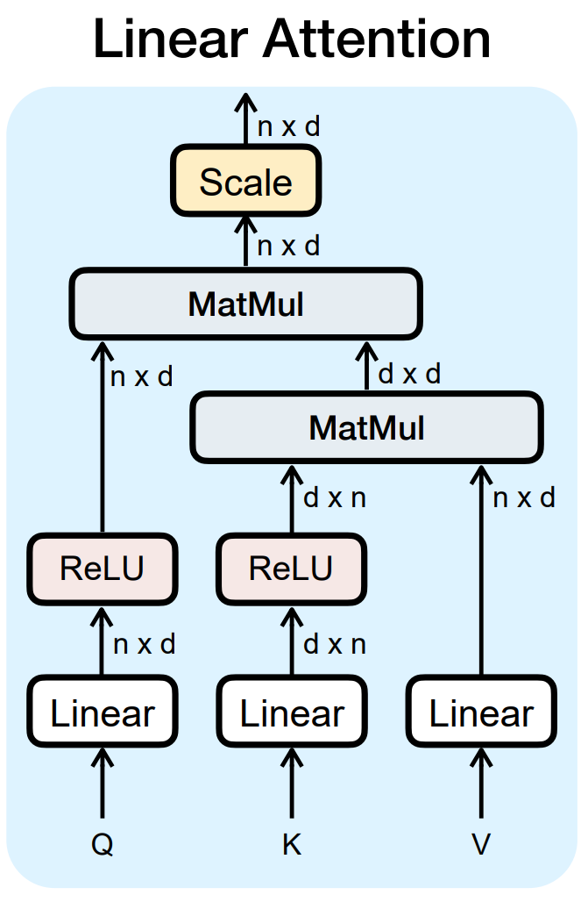
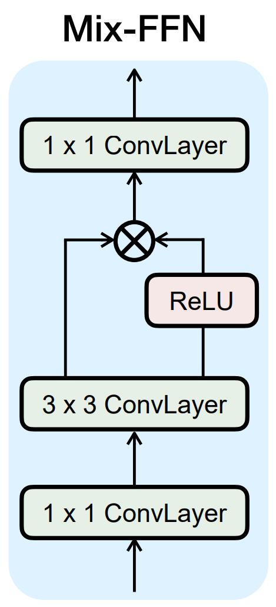
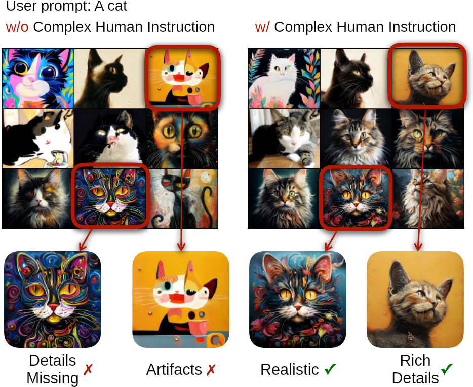
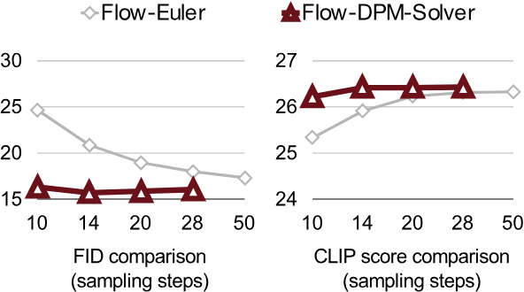

Efficient high-resolution image synthesis with linear diffusion transformers.
Enze Xie* and Junsong Chen*, with Junyu Chen, Han Cai, Haotian Tang, Yujun Lin, Zhekai Zhang, Muyang Li, Ligeng Zhu, Yao Lu, and Song Han. NVIDIA, MIT, Tsinghua. arXiv:2410.10629.
Sample from the paper. Xie and Chen et al., ICLR 2025.
Figure 1 in the paper: overview of generated images and inference latency.
Plan
Introduction
The pivotal question, four core designs from the paper
Motivation
Who got huge, then why scaling factor F = 8 and patch size P = 2 break at 4K
Method
Compression, linear attention, Gemma, data, the solver
Results
DiT size & block cost, Table 7 at 1024, 4K latency ladder, laptop
Critical reading
Failure modes, assumptions, three limits
Conclusion
Their 4096 claim, then video, safety, and pictures still hard
Discussion
Linear attention, VAE compression, CHI and intent
Introduction
A pivotal question
Training and inference costs keep rising with model size.
Can we develop a high-quality and high-resolution image generator that is computationally efficient and runs very fast on both cloud and edge devices?
SANA trains and synthesizes from $1024 \times 1024$ up to $4096 \times 4096$. PixArt-$\Sigma$ is the main prior near 4K, but it is slow there.

Figure 2 in the paper: algorithm and system co-design on an A100, batch 1. Their DiT baseline 469s → 9.6s; caption compares 9.6s to FLUX at 106×. You will unpack both denominators in results.
Introduction · four core designs
Compression, linear DiT, Gemma, and efficient training.
Deep compression autoencoder
Mainstream autoencoders use downsampling factor F = 8 (AE-F8). SANA pushes F to 32. That yields 16× fewer latent tokens than AE-F8 alone, which matters for training and for 4K synthesis.
Efficient linear DiT
Vanilla DiT self-attention is $\mathcal{O}(N^{2})$. Linear attention replaces it with $\mathcal{O}(N)$. Mix-FFN adds a 3×3 depthwise conv in the MLP for local token mixing. With that design they drop positional embeddings at 1K with no quality loss (NoPE); 2K and 4K finetunes bring sin-cos back.
Decoder-only small LLM as text encoder
Most models still use CLIP or T5. SANA uses Gemma for stronger comprehension and instruction following. They fix training instability from raw LLM states and add complex human instructions (CHI) to improve text–image alignment.
Efficient training and inference strategy
Multiple VLMs re-caption each image for diverse captions. A CLIP-score-based rule samples which caption to train on. At inference, Flow-DPM-Solver cuts steps from about 28–50 (Flow-Euler) to 14–20 with better results.
Introduction · at a glance
Comparison of earlier architectures.
Design choice
Standard LDM
FLUX-dev
SANA
Compression
AE-F8, DiT patch P = 2 (÷16 per side)
F8C16P2
DC-AE F32C32P1 (÷32, P = 1)
Self-attention
Softmax, $\mathcal{O}(N^{2})$
Softmax
ReLU linear, $\mathcal{O}(N)$
Text encoder
CLIP or T5 typical
T5-XXL class
Gemma-2-2B-IT, frozen
Positional encoding
Absolute, learnable, or RoPE
Same family
NoPE at 1K; sin-cos back for 2K / 4K finetune
Sampling
Often 28–50+ steps
~50 steps (dev)
Flow-DPM-Solver, 14–20 steps
4K latency
1023s scale (FLUX-dev class)
1023s
9.6s · SANA-0.6B
A100, FP16, batch 1 at $4096 \times 4096$. $1023 / 9.6 \approx 106$ against FLUX-dev only. FLUX-schnell is 76s, about $8\times$ slower than SANA, not 100×. No GenEval or DPG scores exist at 4K in this paper.
Motivation
Text-to-image quality scaled. So did the models.
Latent diffusion has driven text-to-image research and products. Researchers converge on transformers instead of U-Nets, VLM captions, better VAEs and text encoders, and higher resolution.
U-NetConvolutional encoder–decoder with skip connections; the denoiser in classic latent diffusion (e.g. Stable Diffusion 1.x).
VLMVision–language model that reads an image and writes a detailed caption; used to enrich or replace short web alt text in training.
VAEVariational autoencoder that compresses RGB to a smaller latent grid; diffusion runs in that space, then the VAE decodes back to pixels.
Parameter counts jumped by more than an order of magnitude. Studios and design tools also want 4K frames, meaning $4096 \times 4096$. That is four times the side length of a $1024 \times 1024$ image, and sixteen times as many pixels. The models in this table hit memory and speed walls there.
A diffusion model starts from noise and removes it over many steps. These systems do that work in a compressed latent image, then decode back to pixels.
Text-to-image model
Parameters
PixArt-α
0.6B
Hunyuan-DiT
1.5B
SD3-Medium
2.0B
FLUX-dev
12B
Playground v3
24B
The introduction also cites SD3 at 8B and LiDiT at 10B as the large end of the race. Later tables use the 2B SD3-Medium checkpoint.
Motivation
Standard diffusion transformers build an $N \times N$ map.
F · downsamplingThe autoencoder divides each side of the image by F. F = 8 turns a 1024 image into a 128×128 latent.
P · patch sizeThe diffusion transformer then groups that latent into P×P patches. P = 2 halves each side again.
N · token count$N = \big(\frac{W}{F \times P} \times \frac{H}{F\times P}\big)$. Usual models use F = 8 and P = 2, so each side is divided by 16.
$1024 \times 1024$
$1024 / 16 = 64$, so $N = 64^{2} = 4{,}096$ tokens. The attention matrix is $4{,}096 \times 4{,}096$, about 16.7 million entries.
$4096 \times 4096$
$4096 / 16 = 256$, so $N = 256^{2} = 65{,}536$ tokens. The matrix is $65{,}536 \times 65{,}536$, which is $4.29 \times 10^{9}$ entries per head.
Softmax is a nonlinearity around $QK^{\top}$, so the model has to materialize that $N \times N$ matrix. Memory grows as $\mathcal{O}(N^{2})$. Compute grows as $\mathcal{O}(N^{2} d)$. Sixteen times more tokens is two hundred and fifty-six times more attention.
Motivation
One 4K frame is 17 minutes on an A100.
FP16, batch 1, one NVIDIA A100. The 1023 second figure is FLUX-dev at $4096 \times 4096$.
1024 image · manageable
4,096 tokens. Softmax map: 16.7 million entries. A current 1024 generator fits, and it finishes in seconds.
4096 image · the map is 8 GB
65,536 tokens. One head’s fp16 matrix is $65{,}536^{2} \times 2$ bytes = 8 GB, before weights and the other heads. A 16 GB laptop GPU cannot allocate it.
1023sFLUX-dev, 12B, on one A100. About 17 minutes for a single 4K image.
76sFLUX-schnell, also 12B. Distilled. Still far from interactive at 4K.
9.6sSANA-0.6B on the same A100 measurement. The rest of the talk is how.
Method · pipeline
One pipeline. Patch size P = 1, so latent sites are DiT tokens.

Text · GemmaUser prompt plus CHI template → Gemma-2-2B-IT (frozen). Last-layer states pass RMSNorm with learned scale γ = 0.01, then feed cross-attention (the figure labels this block “Small LLM”).
Latent · $z_T$Inference starts from noise latent $z_T$. At 1024 pixels the DC-AE grid is $32 \times 32 \times 32$ with $F = 32$, $C = 32$, and $P = 1$. Linear DiT denoises with ReLU linear attention ($\mathcal{O}(N)$) and Mix-FFN (3×3 depthwise conv).
Sampler · decodeFlow-DPM-Solver runs 14–20 steps to $z_0$. The same DC-AE decoder (32×) maps $z_0$ to a $1024 \times 1024$ image; 2K/4K use finetuned checkpoints.
Figure 3 in the paper: overview (a) and Linear DiT module (b). Positional embedding is optional at 1K (NoPE); sin-cos returns for 2K/4K finetunes. Xie and Chen et al., ICLR 2025.
Method · pipeline
Prompt to pixels: Figure 3 blocks plus sampler and decode.

Mermaid overview aligned with Figure 3(a): Small LLM, time/pos conditioning, DC-AE latent grid, and Linear DiT block order. RMSNorm, noise init $z_T$, Flow-DPM-Solver, and explicit decoder step are inference additions not drawn in the paper figure. Xie and Chen et al., ICLR 2025.
Method · autoencoder
Put the compression in the autoencoder, not in the patch size.
C · latent channelsAfter encoding, each grid cell holds $C$ learned scalars—a small code vector, not a pixel. The encoder is trained so different channels pick up different aspects of local appearance (layout, edges, texture, color variation, fine detail); together they describe what should be at that location, and the decoder combines all $C$ to reconstruct RGB. More $C$ is a wider code (more capacity for detail), not a larger grid.
They hold the token grid fixed at 32×32 for a 1024 image, and move the downsampling between the autoencoder and the patch embed.
AE-F8C16 with patch 4.
AE-F16C32 with patch 2.
AE-F32C32 with patch 1.
Reconstruction rFID gets worse as F grows. Generation FID gets better as F grows. The best compressor is the worst generator, and the reverse.
The design rule
High-resolution images are redundant. An autoencoder can spend its capacity on that. A diffusion model that also has to patch away detail is doing two jobs, and it does the denoising job worse.
DC-AE is trained with linear attention inside the autoencoder, then finetuned at 1024 so the high-resolution reconstruction holds. The architecture paper is Chen et al., 2024, arXiv:2410.10733.
Method · autoencoder
C = 32 is the operating point, not a match for SDXL.
MJHQ-30K30,000 Midjourney images used as a reconstruction benchmark; each metric compares originals to VAE encode–decode on this set.
SDXLStable Diffusion XL reference VAE in the table (F8C4: 8× downsampling, 4 latent channels)—the strong reconstruction baseline.
SDStable Diffusion 1.x (latent diffusion): the F32C64 row is its older 32× VAE, a failed compression baseline before DC-AE.
rFID ↓Reconstruction FID: distributional distance between MJHQ originals and encode–decode outputs (lower = closer). Not generation FID.
PSNR ↑Peak signal-to-noise ratio from pixel MSE between original and reconstruction; reported in dB (higher = less pixel error).
SSIM ↑Structural similarity of local patterns, contrast, and brightness (often 0–1; higher = more structurally alike).
LPIPS ↓Learned perceptual patch distance in a deep network feature space (lower = more perceptually similar).
Autoencoder, on MJHQ-30K
rFID ↓
PSNR ↑
SSIM ↑
LPIPS ↓
SDXL, F8C4
0.31
31.41
0.88
0.04
SD, F32C64. An earlier 32× attempt.
0.82
27.17
0.79
0.09
DC-AE, F32C32
0.34
29.29
0.84
0.05
At the same 32×32 token count, generation FID ranks F32C32P1 < F16C32P2 < F8C16P4—worse reconstruction can still yield better samples when the AE owns compression and the DiT only denoises.
DC-AE F32C32 bridges the gap SD F32C64 left open: rFID comparable to SDXL, with a small PSNR and perceptual margin the paper does not expect to bottleneck the DiT. C = 32 is the chosen width—better than C = 16 on reconstruction and downstream scores, and far faster to train through than C = 64.
Method · linear DiT · core mechanics
From an $N\times N$ softmax map to linear cost in sequence length.

To cut cost, SANA replaces softmax self-attention with ReLU linear attention (Katharopoulos et al., 2020). ReLU linear attention and related variants (EfficientViT, Linformer, and others) are proven in high-resolution dense prediction; this work is an early test that they work for image generation.
In implementation, we do not rebuild attention per query. Compute shared terms once, reuse them for every $\mathbf{Q}_i$ — linear $\mathcal{O}(N)$ memory and compute (paper), vs an $N\times N$ softmax map.
$\displaystyle\sum_{j=1}^{N}\mathrm{ReLU}(\mathbf{K}_j)^{\top}\mathbf{V}_j\in\mathbb{R}^{d\times d}$ and $\displaystyle\sum_{j=1}^{N}\mathrm{ReLU}(\mathbf{K}_j)^{\top}\in\mathbb{R}^{d\times 1}$ — then each query only multiplies through these aggregates (Figure 3(b), Eq. in paper).
Wall clock · $d=1152$
At 4K, $N=16{,}384$ — linear-attention step 41 s → 24 s (1.7×). Cross-attention to text stays softmax (short sequence).
Linear Attention: $\mathrm{ReLU}$ on $Q$/$K$, $d\times d$ key–value aggregate, Scale, Cost $\mathcal{O}(n)$. Xie and Chen et al., ICLR 2025.
Method · linear DiT · Mix-FFN & NoPE
Depthwise convolution restores locality; padding carries position at 1K.

Mix-FFN stack
Global ReLU attention needs a local mixer — match the paper diagram:
$1\times1$ conv — expand
$3\times3$ depthwise conv — spatial mix
Gated Linear Unit ($\times$ branch + ReLU branch)
$1\times1$ conv — project
NoPE at 512 / 1024 px
Positional Embedding was removed without any loss in performance. Some earlier theoretical and practical works have mentioned that introducing 3×3 convolution with zero padding can implicitly incorporate the position information.
In contrast to previous DiT-based methods that mostly use absolute PE, learnable PE, and RoPE, authors propose NoPE, the first design that entirely omits positional embedding in DiT.
NoPE applies to 512/1024 pretraining. At 2K finetune, absolute PE is reintroduced for performance; at 4K finetune based on 2K, PE is interpolated as in PixArt-$\Sigma$.
Data flow
$$\begin{aligned}
X &\in \mathbb{R}^{H \times W \times C} \\
\xrightarrow{\mathrm{Conv}_{1\times 1}} &\quad \mathbb{R}^{H \times W \times E \cdot C} && \text{(Expand channels across 1×1 grid)} \\
\xrightarrow{\mathrm{DWConv}_{3\times 3}} &\quad \mathbb{R}^{H \times W \times E \cdot C} && \text{(Spatial mix within each channel)} \\
\xrightarrow{\mathrm{GLU}} &\quad \mathbb{R}^{H \times W \times \frac{E \cdot C}{2}} && \text{(Element-wise gating and dimension split)} \\
\xrightarrow{\mathrm{Conv}_{1\times 1}} &\quad \mathbb{R}^{H \times W \times C} && \text{(Project back to original channels)}
\end{aligned}$$
Figure 3(b), Mix-FFN: $1\times1$ → $3\times3$ depthwise → GLU → $1\times1$ (from the Linear DiT module detail). Xie and Chen et al., ICLR 2025.
Method · text encoder
Decoder-only Gemma-2 and the CHI prompt enhancer
EncoderTurns text into numerical context for the diffusion transformer—typically a sequence of hidden states, one per subword token. Cross-attention lets each image token query that sequence (“what objects, colors, layout?”). Prior text-to-image models often use CLIP or T5 encoders; SANA uses an instruct-tuned Gemma for stronger comprehension and CHI-expanded prompts, with RMSNorm and small initial $\gamma$ so raw LLM activations do not destabilize training.
Why Gemma-2-2B over T5-XXL? T5-XXL has 4.7B parameters and 1.61 s encode latency. Gemma-2-2B-IT runs in 0.28 s (about 6× faster) with equal or better comprehension at similar FID; Gemma stays frozen.
Stabilizing training (RMSNorm + scale). Raw decoder-only hidden states as cross-attention K/V drive the loss to $\mathrm{NaN}$ (large variance vs. T5). SANA applies RMSNorm (variance → 1) and a learnable scale $\gamma$ with $\gamma_{\mathrm{init}}=0.01$.
Complex Human Instruction (CHI). In-context examples plus a system template ask Gemma to expand a short user prompt into a visual description before embeddings reach the DiT (figure →).
Impact: GenEval gains of +2.0 to +2.2 points with CHI (early training, 0–100 scale); +5k finetune vs. LiDiT-style instructions: 0.642 vs. 0.626.

Generations with and without Complex Human Instruction (CHI). Without CHI, a short prompt can yield artifacts and weaker detail. Xie and Chen et al., ICLR 2025.
Method · training
Training data is relabeled, reweighted, and scaled up in stages.
CLIP scoreA scalar from a frozen CLIP model: similarity between the image and a candidate caption in CLIP’s shared embedding space. Higher $c_i$ means the text describes that image more closely; SANA uses it only to rank and sample captions.
Four VLMs recaption each image—VILA-3B, VILA-13B, InternVL2-8B, and InternVL2-26B—so supervision is more accurate and diverse than one fixed string.
Each training step draws one caption with a softmax over those scores, biasing toward stronger image–text pairs; $\tau$ controls how sharply you favor the top captions.
Resolution follows a ladder—512 → 1024 → 2K → 4K—with no separate 256px stage: heavy spatial compression already lives in the autoencoder. Low-res pretrain dropped too much detail and slowed model convergence.
Which caption you sample shifts training-time semantic alignment a little while image quality (FID) stays essentially flat—a cheap lever next to retraining the diffusion model.
The scorer’s CLIP uses a 77-token context; authors argue salient words are front-loaded.
Method · flow & sampling
Flow matching: what changes in training?
Classical DDPM
Corrupt the latent: $x_t=\alpha_t x_0+\sigma_t\epsilon$.
The DiT learns noise prediction $\epsilon_\theta(x_t,t)\approx\epsilon$.
Near $t\approx T$ (almost pure noise), that target is hard to learn and integrate; errors compound over sampling steps.
SANA (rectified flow)
Same corruption $x_t$.
The DiT learns velocity $v_\theta(x_t,t)\approx\epsilon-x_0$—a straight path from data toward noise.
More stable where attention peaks at $t\approx T$ (Balaji et al.); the paper reports faster training convergence vs. DDPM at matched budget.
At inference, Flow-DPM-Solver converts velocity to a data readout when the multistep update needs $\hat x_0$:
$$\hat x_0=x_t-\sigma_t v_\theta(x_t,t)$$

Figure 8: FID and CLIP vs. steps—Flow-DPM-Solver stabilizes by 14–20 steps; Flow-Euler often needs 28–50 and ends worse. Xie and Chen et al., ICLR 2025.
Results · model size
0.6B and 1.6B stay in the 20–30 layer band. Width scales; depth does not.
WidthHidden size of each DiT block; sets capacity and the width of the linear-attention state.
DepthNumber of stacked DiT blocks—more layers, more compute per forward pass.
FFNFeed-forward inner width (Mix-FFN in SANA); often the largest block after attention.
HeadsParallel attention heads; head dimension stays 32 on both checkpoints.
ParamsDiT weights only (590M / 1.6B); Gemma-2-2B-IT is frozen and separate.
AEAutoencoder + patch config (e.g. F8C4P2 vs F32C32P1); fixes the token grid at 1024.
MACs (T)Multiply–accumulate operations for one denoiser forward at 1024.
Latency (ms)Batch 1, one forward pass on an A100 (Table 8); 20-step end-to-end time is higher.
Table 6 · DiT architecture
Width
Depth
FFN
Heads
Params
SANA-0.6B
1152
28
2880
36
590M
SANA-1.6B
2240
20
5600
70
1604M
Same depth class as DiT-XL and PixArt-Σ—not a 12B-wide FLUX stack. At 1024 the MAC cliff is F32; linear attention alone regresses quality until Mix-FFN.
Table 8 · 1024² block cost (A100 FP16)
AE
MACs
Latency
FullAttn & FFN
F8C4P2
6.48T
2250 ms
+ LinearAttn
F8C4P2
4.30T
1931 ms
+ MixFFN
F8C4P2
4.19T
2425 ms
+ Kernel fusion
F8C4P2
4.19T
2139 ms
LinearAttn & MixFFN
F32C32P1
1.08T
826 ms
+ Kernel fusion
F32C32P1
1.08T
748 ms
Table 13 · quality, 256px, 52k
FID
CLIP
Full attention + FFN
18.7
24.9
Linear attention
21.5
23.3
+ Mix-FFN
18.9
24.8
Linear attention alone is a quality regression. Mix-FFN earns it back and, at 1024, spends the latency linear attention had saved. Fusion recovers some of that. F32 cuts MACs from 4.19T to 1.08T.
Tables 6, 8 & 13. Xie and Chen et al., ICLR 2025.
Results · 1024
39× throughput vs FLUX-dev; FID wins; GenEval trails schnell and dev slightly.
At 512, schnell is faster. At 4K, SANA is 8× schnell and 106× dev.
Latency, batch 1, A100 FP16
512
1024
2048
4096
FLUX-dev
7.9s
23s
117s
1023s
FLUX-schnell
0.7s
2.1s
10.5s
76s
PixArt-Σ
1.2s
2.7s
18.1s
186s
SANA-0.6B
0.8s
0.9s
2.5s
9.6s
Table 15. Rust cell: schnell leads at 512 only. At 4096, SANA-0.6B is 0.104 img/s and schnell is 0.013, so those rates are 1/latency. SANA-1.6B at 4096 is 15.9s on Figure 1. No GenEval or DPG at 4096.
469sOwn DiT baseline
11.4×Deep AE → 41s
1.7×Linear DiT → 24s
1.1×Triton → 21s
2.2×Solver → 9.6s
Figure 2, on their own stack: 11.4 × 1.7 × 1.1 × 2.2 ≈ 47, and 469/9.6 = 49. The autoencoder removes 428 of the 459 seconds. The headline’s 106× is 1023/9.6 against FLUX-dev; Table 15’s throughput ratio is 104×.
Results · edge
0.37 seconds on a laptop 4090, with the sensitive operations left in FP16.
1024² on the laptop
Latency
CLIP
ImageReward
SANA-0.6B, FP16
0.88s
28.5
1.03
W8A8
0.37s
28.3
0.96
Table 5. 2.4×. CLIP on MJHQ-30K. ImageReward on the first 1,000 of those images.
Left in FP16: normalization, the linear attention, and the cross-attention key/value projections.
Figure 9, right. The paper’s own laptop deployment photo. Xie and Chen et al., ICLR 2025.
Critical reading · 1 of 2
Failure modes and the assumptions the co-design rests on.
Intricate small text
Prominent signs render cleanly; dense or low-contrast type can still distort characters.
Complex anatomy
Overlapping hands, fine fingers, and crowded faces still show occasional artifacts.
Mix-FFN dependence
Linear attention without Mix-FFN depthwise convs converges slowly in training (Table 13).
Spatial redundancy
High-resolution images are redundant enough that a $32\times$ autoencoder can compress them without losing semantic boundaries the DiT must keep.
Prompt rewriting
CHI-based LLM expansion preserves user intent without adding unwanted hallucinated detail.
Large isolated lettering from the sample gallery. Not a measured text benchmark.
4K-style detail—gear, foliage, face behind glass. The spatial-redundancy bet in one frame.
Critical reading · 2 of 2
Three limits that are in the paper.
1 · NoPE is a 1K result
The main text reports no loss from dropping positional embeddings. The 2K finetune puts absolute sin-cos embeddings back, and the 4K finetune interpolates them. Mix-FFN by itself didn't carry the resolution.
2 · Linear attention is incomplete without the convolution
It converges more slowly. Alone, FID 18.7 goes to 21.5. Mix-FFN returns it to 18.9. At 1024 the convolution also gives back the latency linear attention had saved, until the kernels are fused.
3 · The metrics disagree, and the conclusion names the failures
MJHQ FID favors SANA, 5.81 against FLUX-dev’s 10.15. GenEval favors FLUX, and the gap is counting and binding, not color. The conclusion: text, faces, and hands remain hard.
Conclusion
What they claim, and what they leave open.
The pipeline
Deep compression, linear attention, a decoder-only text encoder with complex human instructions, automatic captions, and Flow-DPM-Solver.
4096×4096
Throughput more than 100× higher than the SOTA methods. Quality they call competitive.
106× is FLUX-dev at 1023 s over 9.6 s. The DiT ablation is 469 s to 9.6 s.
Video
They will consider an efficient video generation pipeline based on this model.
Safety
They cannot fully guarantee the safety and controllability of the generated content.
Still hard
Text rendering, faces, and hands remain hard.
Discussion
Three questions worth the remaining time.
1
Attention trade-offs. SANA trades $\mathcal{O}(N^{2})$ Softmax attention for $\mathcal{O}(N)$ linear attention plus depthwise convolutions. Under what image generation scenarios or prompt types might linear attention struggle compared to full Softmax attention?
2
Compression responsibility. Previous architectures split spatial compression between the VAE ($8\times$) and DiT patchification ($P=2$). SANA shifts all spatial compression into the VAE ($32\times$, $P=1$). What are the architectural and training risks of placing every compression step on the autoencoder?
3
LLM prompt rewriting and intent. SANA uses Gemma-2 and Complex Human Instruction (CHI) to rewrite short user prompts into detailed scene descriptions. Does automatic expansion risk hallucinating unrequested elements or altering user intent? How could we measure intent preservation quantitatively?
Close
Xie, Chen, et al. SANA: Efficient High-Resolution Image Synthesis with Linear Diffusion Transformers. arXiv:2410.10629 · nvlabs.github.io/Sana
Xie, Chen, et al. SANA. ICLR 2025. arXiv:2410.10629. The DC-AE companion is Chen et al., arXiv:2410.10733.
Katharopoulos et al. 2020. Transformers are RNNs. The ReLU linear attention identity.
Cai et al. 2023, EfficientViT, for Mix-FFN. Islam, Jia, and Bruce 2020, for position in zero-padded convolutions.
Lipman et al. 2022, flow matching. Esser et al. 2024, SD3, for rectified flow at scale and the timestep shift. Lu et al. 2022, DPM-Solver++.
Ma et al. 2024, LiDiT, the simple-instruction baseline. Ghosh et al., GenEval. Hu et al., DPG-Bench.
Backup
After the close.
Kernel fusion, the CHI prompt, flow matching near the prior, the solver’s three edits, model widths, the text-encoder table, GenEval by category, and the resolution sweep.
Backup · kernels
Two fusions, described. Neither is reproduced here as source.
Triton, training and inference
Forward: ReLU is fused onto the end of the QKV projection. Casts and padding are fused onto the start of the KV and QKV multiplies. The division is fused onto the end of the QKV multiply.
Backward: the division fuses into the output projection, and the casts and ReLU fuse onto the ends of the KV and QKV multiplies.
CUDA C++, the W8A8 deployment
The ReLU(K) transpose times V product is fused into the QKV GEMM, so K and V are not round-tripped through DRAM.
Inside Mix-FFN, the GLU is fused with the quantization kernel. Other elementwise ops are fused the same way. Activation layout is chosen so the GEMMs and convolutions do not transpose.
Figure 2’s 1.1×, from 24 seconds to 21, is the Triton step on the 4K waterfall. The 2.4× on the laptop is the separate W8A8 stack.
Backup · Figure 13
The complex human instruction, in their words.
Given a user prompt, generate an “Enhanced prompt” that provides detailed visual descriptions suitable for image generation. Evaluate the level of detail in the user prompt.
If the prompt is simple, add specifics about colors, shapes, sizes, textures, and spatial relationships. If the prompt is already detailed, refine it slightly and do not overcomplicate it.
Example. “A cat sleeping” becomes “A small, fluffy white cat curled up in a round shape, sleeping peacefully on a warm sunny windowsill, surrounded by pots of blooming red flowers.”
The template then gives a second example, a city street at dusk, and ends: generate only the enhanced description, with no commentary. The user prompt follows.
Without the template, Gemma answers a short prompt by asking questions, as in a chat. With it, Gemma emits one visual paragraph. That paragraph is what gets embedded. Early GenEval, on a 0–100 scale: 45.5 to 47.7 at 52k steps.
Backup · Appendix B
Why noise prediction integrates badly near the prior.
Tweedie, as they use it. As t approaches T, x0 and xt become independent, so the conditional expectation is just the data mean. The optimal noise predictor turns into a linear function of xt:
Subtract that linear piece and what remains is a data predictor, which near the prior is approximately the constant E[x0]. A multistep integrator accumulates much less error on a constant than on a line. Flow-DPM-Solver puts the velocity model into that data coordinate before integrating. They also cite Balaji et al.: attention activations are strongest near t = T, so this is exactly where an error is expensive.
Backup · Algorithm 1
Three edits to DPM-Solver++. The rest of the update is unchanged.
Time
Steps live in [0, 1], not [1, 1000]. A shift s, taken from the SD3 schedule, sets σ̃ = sσ / (1 + (s − 1)σ), and α = 1 − σ̃.
Readout
The network predicts velocity. The solver is handed a data prediction: xθ = x̃ − σ̃ vθ(x̃, t).
Update
From the second step on, the multistep corrector is the usual DPM-Solver++ combination of the two previous data predictions. Figure 10 shows that solver already stable at 14 and 20 steps, where Euler at 50 is the reference.
Backup · Table 6
Both models stay shallow. Width does the scaling.
Width
Depth
FFN
Heads
Params
SANA-0.6B
1152
28
2880
36
590M
SANA-1.6B
2240
20
5600
70
1604M
0.6B matches DiT-XL and PixArt-Σ in depth and width. They argue 20 to 30 layers is the efficiency knee. 1.6B is wider and shallower, not deeper.
Head dimension is 1152 / 36 = 32 on the small model, and 2240 / 70 = 32 on the large one. The linear-attention state is still d by d on the full width, not per head, in the formula they write. The implementation detail of whether S is per-head is not separated out in the paper.
Backup · Table 9
Instruct-tuned Gemma matches T5-XXL. The base model does not.
Encoder, 50k steps, A100 FP16
Params
Latency
FID
CLIP
GenEval
T5-XXL
4762M
1.61s
6.1
27.1
0.51
T5-Large
341M
0.17s
6.1
26.2
0.39
Gemma-2-2B
2614M
0.28s
6.0
26.9
0.45
Gemma-2-2B-IT. This is SANA.
2614M
0.28s
6.1
26.9
0.50
Early-training comparison, not the final 0.64 GenEval model. IT is instruct-tuned. The appendix says the instruct variant follows prompts better, and the table agrees.
Backup · Table 11, 1024
The GenEval gap is counting and binding. Color goes the other way.
Two
Count
Color
Position
Attr.
All
SD3-medium
0.74
0.63
0.67
0.34
0.36
0.62
DALL·E 3
0.87
0.47
0.83
0.43
0.45
0.67
FLUX-dev
0.81
0.79
0.74
0.20
0.47
0.67
FLUX-schnell
0.92
0.73
0.78
0.28
0.54
0.71
SANA-0.6B
0.76
0.64
0.88
0.18
0.39
0.64
SANA-1.6B
0.77
0.62
0.88
0.21
0.47
0.66
Single-object scores are 0.96 to 0.99 for every row here, so they are omitted. SANA-0.6B’s overall in Table 7 is 0.64; the category rows are the appendix’s finer cut. Position is weak for FLUX and for SANA. DALL·E 3 is the position outlier, and it is weak on counting.
Backup · Table 15 and Figure 1
SD3, Hunyuan, and the 1.6B row, if someone asks.
Latency, batch 1, A100 FP16
512
1024
2048
4096
FLUX-dev
7.9s
23s
117s
1023s
FLUX-schnell
0.7s
2.1s
10.5s
76s
SD3
1.4s
4.4s
22s
230s
PixArt-Σ
1.2s
2.7s
18.1s
186s
Hunyuan-DiT
5.1s
18s
96s
861s
SANA-0.6B
0.8s
0.9s
2.5s
9.6s
SANA-1.6B
0.6s
1.2s
4.1s
15.9s
The talk slide already showed dev, schnell, PixArt-Σ, and SANA-0.6B. SANA-1.6B at 4096 is Figure 1’s 15.9 seconds. Table 15 prints 5.9s in that cell, which disagrees with the 0.066 img/s beside it. 0.6B at 0.104 img/s is 1/9.6.